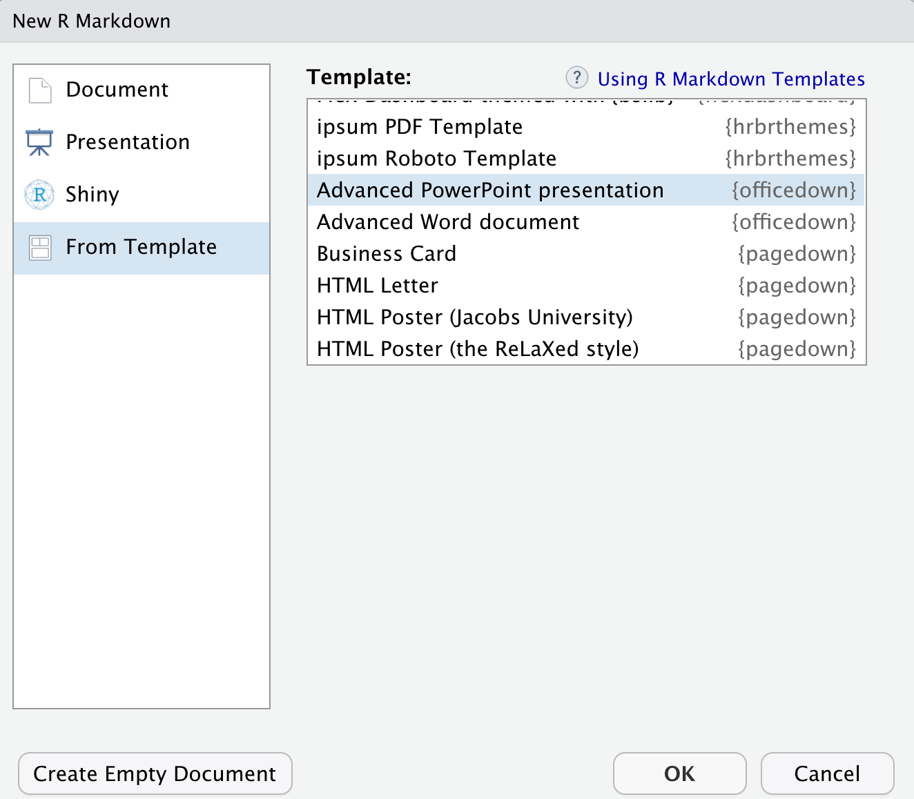
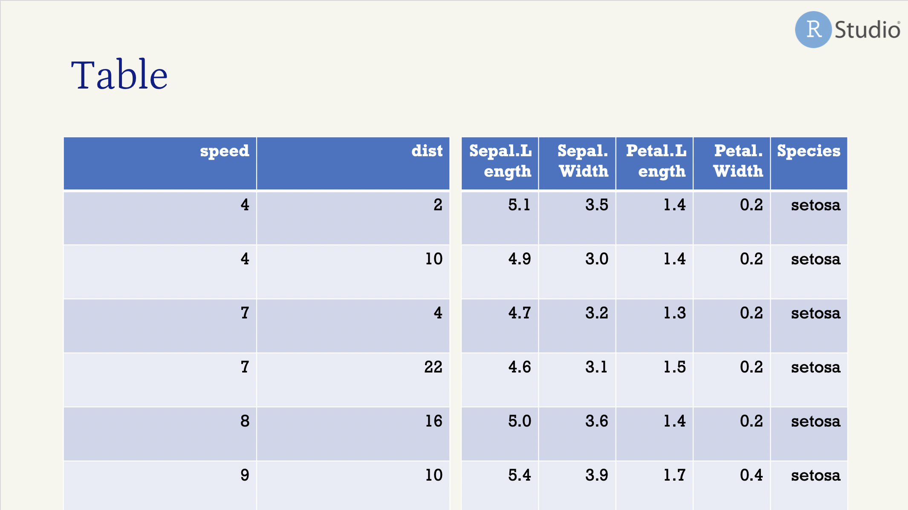
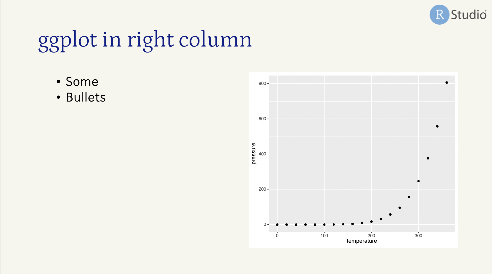
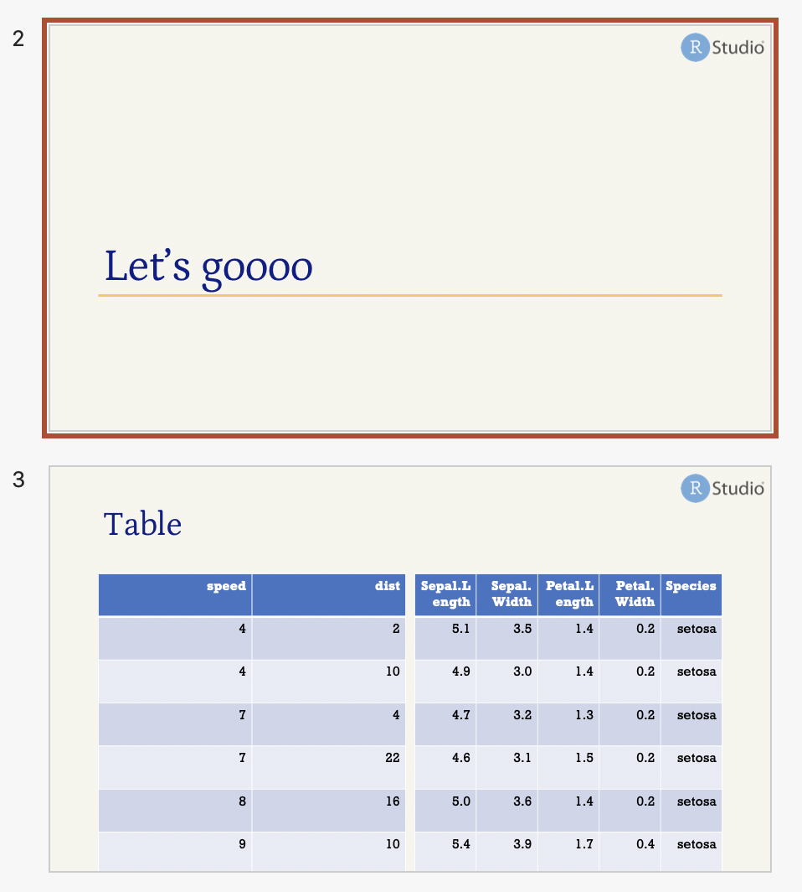
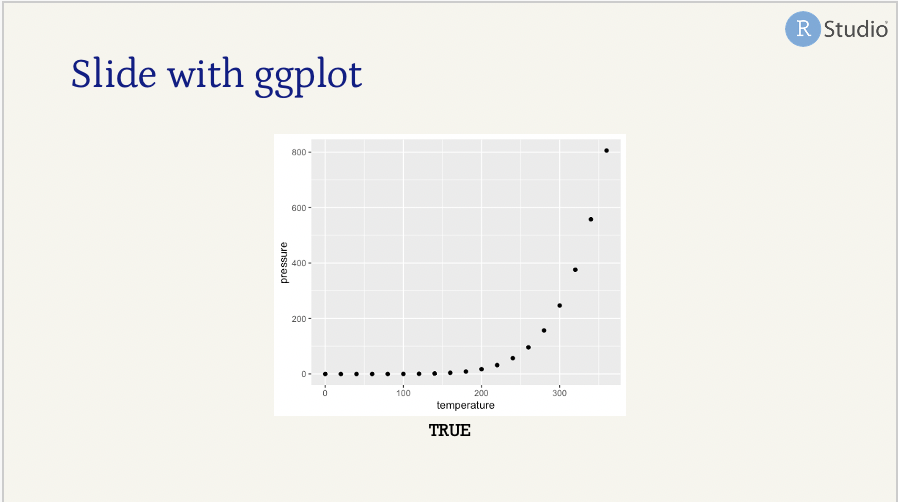
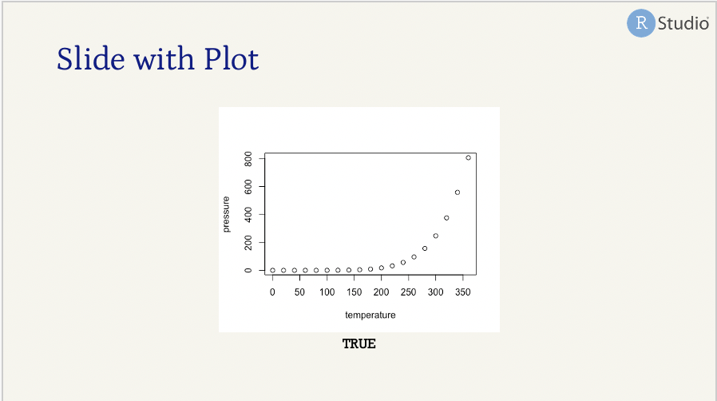
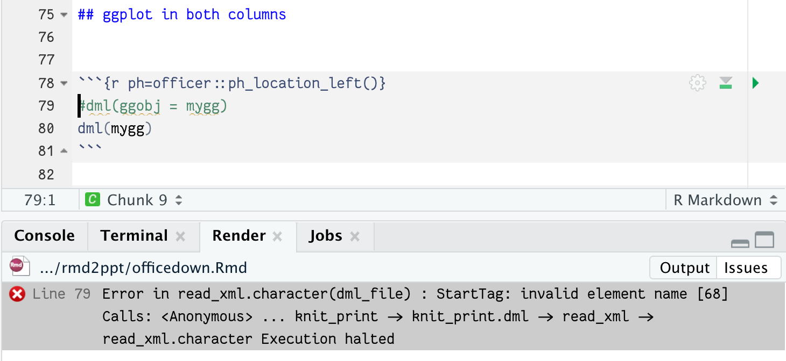

Up and running with officedown
By Alison Hill in rmarkdown
July 27, 2021
Lately, I’ve been exploring the world of R Markdown through the lens of knitting to Microsoft output formats like Word and PowerPoint. I wanted to write down what I’ve learned so far about the officedown package for making PowerPoint (PPT) slides with R Markdown. It is extremely powerful, and I’ve now referred a lot of folks to it, but it was pretty hard for me to grasp at first. These notes are a rough account of my own personal friction log for the next time I use officedown.
Why use officedown?
Why use it? To knit to Microsoft PowerPoint (and Word). Naturally, you might ask, but Alison- there is an rmarkdown::powerpoint_presentation output format already. Yes
there is.
Here is a great use case for not using that format though, from Shannon Pileggi:
“I don’t knit directly to ppt b/c editable graphics are key for finishing touches in our deliverables. If we could knit to powerpoint with an editable graphics option like in officer that would be a great feature.”
So officedown is definitely the answer for many users who wish to go beyond what the rmarkdown package can offer. For more on editable graphic workflows with R, Shannon has a great blog post.
What is officedown?
It is a package whose goal is to allows users to write Word and Powerpoint documents using R Markdown. Install from CRAN:
install.packages("officedown")
(It will also download the officer package for you).
Note that the GitHub page for this package does not include an Issues tab: https://github.com/davidgohel/officedown This means there is no way for users to file bug reports, feature requests, etc. This is definitely a developer’s choice, but I’m not sure how to find a community of users for officedown questions or to get help if you suspect a bug. RStudio Community has a tag but only two posts as of today, one of which was asked by an RStudio employee and never answered 😭 : https://community.rstudio.com/tag/officedown
Officedown works with editable graphics by default. This is huge plus for some workflows (like Shannon’s), but also a huge gotcha because it depends on another package that I didn’t know about and that officedown did not import for me: the rvg package. You must install it separately:
install.packages("rvg")
I suspect but cannot confirm that the name of the package is r + vg (vector graphics). Then there is a function in that package that you must use: rvg::dml(), which I can with certainty tell you stands for DrawingML.
What is DrawingML? Oh I’m so glad you asked, here is a link about it: http://officeopenxml.com/drwOverview.php
“DrawingML is the language for defining graphical objects such as pictures, shapes, charts, and diagrams within ooxml documents.”
What is ooxml?
“Office Open XML, also known as OpenXML or OOXML, is an XML-based format for office documents, including word processing documents, spreadsheets, presentations, as well as charts, diagrams, shapes, and other graphical material.”
Want more weird acronyms?
“It is important to keep in mind that OOXML is not the same as Open Office XML or the Open Document Format (ODF) that underlies the OpenOffice.org and other open source office software. Office Open XML and Open Office XML or ODF are in some sense competing XML standards for office documents.”
What is XML?
Learn here: https://learnxinyminutes.com/docs/xml/
Still want more? A brief history here:
https://en.wikipedia.org/wiki/Office_Open_XML_file_formats
Do you need to know much of these acronyms? No, not really, but you’ll want rvg::dml() burned into your brain as you’ll be typing it often.
Where are the docs at?
The creator of the officeverse collection of packages, which officedown is a part of, is named David Gohel. He has a bookdown book with a chapter on officedown, but it is only about Word rather than PPT output:
https://ardata-fr.github.io/officeverse/officedown-for-word.html
For this reason alone, you may not realize you can use officedown to knit to PPT! I certainly didn’t until my colleague Christophe Dervieux gave me enough support to try it on my own.
Here is the documentation for the PPT output format, although I found it minimally helpful: https://davidgohel.github.io/officedown/reference/rpptx_document.html
I also found this video from a recent meetup by the package author helpful to watch:
So how do I use it?
The new output format officedown gives you is:
---
output: officedown::rpptx_document
---
Christophe shared this link with me, and it helped lot: https://github.com/davidgohel/officedown/blob/master/inst/examples/minimal_powerpoint.Rmd
I didn’t realize at first that the package contains built-in R Markdown templates, which is now where I wish I had started. Use RStudio to access: File > New File > R Markdown > From Template then find:
Once you are inside, go ahead and knit freely. I also recommend loading up a reference template sooner rather than later so you aren’t looking at that default deck for long. Here is how you add a reference template:
---
output:
officedown::rpptx_document:
reference_doc: alison-template.pptx
---
You can download my simple one here: https://github.com/apreshill/rmd2ppt/tree/main/templates
A brief walk through the template
First, you have the packages loaded. Both officedown and rvg are critical here.
```{r setup, include=FALSE}
knitr::opts_chunk$set(echo = FALSE, fig.cap = TRUE)
library(officedown)
library(ggplot2)
library(rvg)
```
If you try to knit the same deck without the officedown package loaded, you will see slides like this:
Figure 1: Two bad slides.
With officedown loaded, you should instead see:
Next up, you’ll see slide number 1 (not to be confused with your title slide, which is populated from the YAML):
## Table
```{r layout='Two Content', ph=officer::ph_location_left()}
head(cars)
```
```{r layout='Two Content', ph=officer::ph_location_right()}
head(iris)
```
The above creates two columns of R-based content. You won’t be able to add normal text to this slide. If you want normal text in one column opposite a plot, scroll down to this text in the template to see how:
## ggplot in right column
- Some
- Bullets
```{r ph=officer::ph_location_right()}
mygg <- ggplot(pressure, aes(x = temperature, y = pressure)) +
geom_point()
dml(ggobj = mygg)
```
Which produces:
If you only wanted to use Markdown in each column, you’ll need to fall back on Pandoc’s two column syntax:
## Pandoc columns
:::: {.columns}
::: {.column}
over here
:::
::: {.column}
over there
:::
::::
Before you get any further, let’s explain these ph things.
Placeholders
These ph knitr code chunk options are part of the officedown package, so in order to use them you must load the package! ph stands for placeholder, and this is a specific way that Microsoft pours your
slide content into a PowerPoint template.
It is essentially a bunch of rectangles on a slide, each called a placeholder. Placeholders typically can hold either text or an image, but not both. For example, in a typical PowerPoint slide like the one above, you can insert either text (often with bullets) or an image – but that is it! The title is text, and is a separate placeholder.
Placeholder values are themselves functions from the officer package with optional function arguments. Now I personally feel that officer::ph_location_left() and officer::ph_location_right() are a little long to type over and over again, which you will. Obviously you could load the officer package at the top, but still that function name is lengthy. I don’t have an answer for simplifying because there is no code completion for knitr chunk options. Maybe
snippets?
Technically you can do left vs right with rmarkdown::powerpoint_presentation too, but you have more options here:
ph_location_type(type="body")ph_location_fullsize()ph_location(width = 2, height = 2, left = 2, top = 2)(for example)- More documented here: https://davidgohel.github.io/officer/reference/index.html#section-slide-content
Layouts
The layout chunk option is harder. I think this name comes from the template you are using. To see your actual options, I recommend now using the officer package directly to read_pptx() of your template file, and the using layout_summary():
## Seeing my layout options
This is handy, `officer::layout_summary()`
```{r echo=FALSE}
library(officer)
my_template <- read_pptx("alison-template.pptx")
layout_summary(my_template) %>% knitr::kable()
```
Here was my output:
| layout | master |
|---|---|
| Title Slide | Office Theme |
| Title and Vertical Text | Office Theme |
| Vertical Title and Text | Office Theme |
| Title and Content | Office Theme |
| Section Header | Office Theme |
| Two Content | Office Theme |
| Comparison | Office Theme |
| Title Only | Office Theme |
| Blank | Office Theme |
| Content with Caption | Office Theme |
| Picture with Caption | Office Theme |
You can use any of these as valid layouts. This is another difference between rmarkdown::powerpoint_presentation which only supports four layouts:
- Title Slide
- Title and Content
- Section Header
- Two Content
New slides
You might be wondering at this point is “how do I make new slides?” and “how does it know where a new slide starts?” This format derives from rmarkdown::powerpoint_presentation, which derives from Pandoc. Pandoc documents
slide separators as follows:
By default, the slide level is the highest heading level in the hierarchy that is followed immediately by content, and not another heading, somewhere in the document. In the example above, level-1 headings are always followed by level-2 headings, which are followed by content, so the slide level is 2. This default can be overridden using the –slide-level option.
The document is carved up into slides according to the following rules:
A horizontal rule always starts a new slide.
A heading at the slide level always starts a new slide.
Headings below the slide level in the hierarchy create headings within a slide.
Headings above the slide level in the hierarchy create “title slides,” which just contain the section title and help to break the slide show into sections. Non-slide content under these headings will be included on the title slide (for HTML slide shows) or in a subsequent slide with the same title (for beamer).
A title page is constructed automatically from the document’s title block, if present. (In the case of beamer, this can be disabled by commenting out some lines in the default template.)
Clear? Right, yea it confuses me too every time.
The default slide_level is 2, which means that you should expect to start new slides with ## My slide title. Starting a slide with # A level 1 header will create a section title slide, using your section header layout (see
layouts above), and none of your body text will be displayed. You could change this in your YAML, but I recommend keeping the default:
---
output:
officedown::rpptx_document:
reference_doc: alison-template.pptx
slide_level: 2 # default + recommended
---
With that default, if you added:
# Let's goooo
## Tables
You would see:
You cannot have normal body text on a section slide, so don’t add anything between those two slides or Pandoc will helpfully split off a new slide:
# Let's goooo
anybody home? <- don't do this
## Table
With slide_level: 2, here is how a deck gets chopped up:
# I'm a new slide- a section header
## I'm slide number 2, with content
### I'm also slide number 2, text is slightly bold
I'm content on slide number 2
## I'm slide number 3
# I'm slide number 4- another section header
You can force a slide break using ---, but headers will still work the same way.
# I'm a new slide- a section header
## I'm slide number 2, with content
### I'm also slide number 2, text is slightly bold
---
I'm slide number 3
---
## I'm slide number 4
# I'm slide number 5- another section header
Plots
Including plots for me was sadly a long drawn-out affair. I didn’t understand:
-
I had to use the
rvg::dml()wrapper for plots, even if I didn’t care if they were editable or not. This is required if you don’t want TRUE printed after each plot. In a two-column slide layout, non-dml()wrapped plots will also appear on a slide by themselves, without an error.
-
If you further want to use ggplot2, you also cannot just print your plot object, you must use
dml(ggobj = my_plot). This one really got me. Again, in the template, but less well-documented elsewhere. If you try to wrap a ggplot2 object indml()only, you might see this error: -
You cannot combine text and code or plots inside the same placeholder. They cannot co-exist. If you do, the text is either overlaid or covered up by your code/output. This is how
rmarkdown::powerpoint_presentationworks as well. A way around it is to use figure and table captions. -
I use
ref.labelall the time to reuse code chunks, especially for plots. Because of the above, you’ll need to always create and save a plot object, then wrap it isrvg::dml(ggobj=mygg)in the origin chunk. I get an error if I try to use the magrittr pipe here (%>%, so this gets a bit laborious to change your plotting ways. For example:
## Testing officedown
```{r flipper-hist, include=FALSE}
library(palmerpenguins)
library(dplyr)
library(ggplot2)
# Histogram example: flipper length by species
flipper-hist <- ggplot(data = penguins,
aes(x = flipper_length_mm)) +
geom_histogram(
aes(fill = species),
alpha = 0.5,
position = "identity") +
scale_fill_manual(values = c("darkorange","darkorchid","cyan4"))
rvg::dml(ggobj = flipper-hist) # you must do this!
```
```{r layout='Two Content', width=2, ph=officer::ph_location_left(), warning=FALSE, message=FALSE, echo=FALSE}
penguins %>%
count(species)
```
```{r ref.label='flipper-hist', width=2, layout='Two Content', ph=officer::ph_location_right(), echo=FALSE, warning=FALSE, message=FALSE}
```
Wrapping up
This is as far as I got with officedown. I can see it being very useful to users who need more control over their Microsoft outputs than base rmarkdown and Pandoc can provide. However, there are definitely some places where a typical R Markdown user will accumulate pretty serious papercuts.
I’d love to hear about happy officedown use cases and the problems it solves for teams! I know a lot of organizations run on Microsoft Office products, so I appreciate the hard work that has gone into this suite of tools.
- Posted on:
- July 27, 2021
- Length:
- 11 minute read, 2249 words
- Categories:
- rmarkdown
- Tags:
- powerpoint rmarkdown